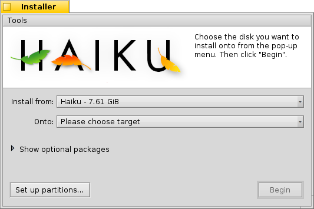

Haiku Kur
Haiku Kur
| Masaüstü Çubuğu: | ||
| Konum: | /boot/system/apps/Installer | |
| Ayarlar: | yok |
Haiku Kur, Haiku'yu başka bir bölüme kopyalamak için kullanılır. Geçerli kurulumunuzu tüm ayarlar ve uygulamalarla birlikte başka bir disk bölümüne kolayca klonlayabilirsiniz. Elbette, Haiku'yu ilk kez kurarken de bu uygulamadan yararlanacaksınız. Ayrıntılı bilgi için çevrimiçi Kurulum Kılavuzu'na bakın.
Başlatıldıktan sonra, Haiku Kur, önemli bilgiler içeren bir başlangıç ekranı görüntüler. Normalde okumadan geçilecek bir metin değildir, önemli bilgiler verir:
Beta sürümde olan bir yazılım kullanıyorsunuz. Düzenli yedekler alın, yoksa sonuçlarına katlanırsınız!
Haiku Kur, önceden hazırlanmış bir disk bölümüne gereksinim duyar. Bir disk bölümü hazırlamak ve biçimlendirmek için Disk İzlencesi uygulamasını kullanabilirsiniz; ancak henüz var olan bölümleri yeniden boyutlandıramazsınız. Bunun için şimdilik GParted LiveCD veya benzer bir araç kullanmalısınız.
- Haiku, GRUB önyükleme yöneticisine el ile eklenebilir. Bunun nasıl yapılacağını çevrimiçi kılavuzdan öğrenebilirsiniz.
'e basarak anladığınızı belirttikten sonra aşağıdaki pencere ile karşılaşacaksınız:
İlk açılır menüde kurulum kaynağını belirtin. Geçerli bir Haiku kurulumu veya bir kurulum CD'si veya USB'si olabilir.
İkinci açılır menü kurulum hedefini seçmenizi ister. Hedef bölümün tümüyle üzerine yazılacaktır; dolayısıyla önceden bölümlendirmesinin yapılmış olması gerekmektedir.
İsteğe bağlı paketleri göster çekmecesini açarsanız temel Haiku kurulumuna kurabileceğiniz ek paketleri görebilirsiniz.
Kurulum işlemine başlamadan önce son bir kez seçtiğiniz kaynak/hedef bölümlerin doğru olduğunu denetleyin. menü girdisine tıklayarak Disk İzlencesi uygulamasını açın ve kullanılabilir bölümlerin yerleşimlerini ve adlandırmalarını denetleyin.
, kurulum prosedürlerini başlatır; özünde yaptığı şey /home/ ve /system/ dizinlerini hedef disk bölümüne kopyalar ve önyüklenebilir yapar.
 Araçlar
Araçlar
Kurulum işleminin sonunda, disk bölümü kendiliğinden önyüklenebilir yapılır. Ancak bazen kimi işletim sistemleri veya bölümlendirme araçları (kazayla) Haiku önyükleme sektörünün üzerine yazabilir. Böyle bir durumda kurulum ortamından Haiku'yu başlatın ve Haiku Kur'u çalıştırın. Yeniden önyüklenebilir yapmak için menüsünden , 'ı seçin.
The other item in the menüsündeki diğer öge, hangi işletim sisteminden önyüklemek istediğinizi seçmek için için kullanılır. Daha fazla bilgi için Önyükleme Yöneticisi konusuna bakın.
GRUB gibi bir önyükleme yöneticisi kullanıyarsanız veya Haiku makinenizdeki tek işletim sistemiyse Önyükleme Yöneticisi uygulamasına gereksiniminiz yoktur.